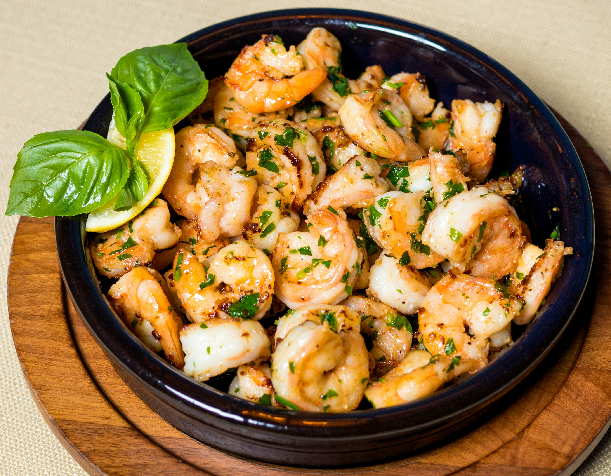

Shrimp Scampi

Description
A staple in Italian cuisine, Shrimp Scampi consists of delicate linguine noodles simmered in a sauce of butter, garlic, white wine, and lemon juice or zest, typically with red pepper flakes for an added kick. For any seafood lover, this is sure to be a favorite. It is undoubtedly my favorite pasta dish due to the toothsome feel of the linguine without it being coated in a bucket of heavy-cream based sauce without compromising flavor. The shrimp gives it this unbelievable savory flavor and the lemon adds just the right amount of 'zip'...
Ingredients
- Linguine noodles
- Shrimp
- Half a lemon or lemon juice
- Butter
- Fresh garlic
- Parsley, chopped
- Red pepper flakes
Steps
- Peel and devein fresh shrimp. Tails are optional.
- Mince garlic and chop fresh parsley.
- Melt butter in a large pan, before adding red pepper flakes and minced garlic, sautéing until fragrant.
- Add shrimp to skillet, cooking for 2-3min until tender.
- Add a dry white wine of your choosing to deglaze the pan. Simmer until reduced.
- Stir in cooked pasta of your choice, usually linguine. Add pasta water to emulsify as needed.